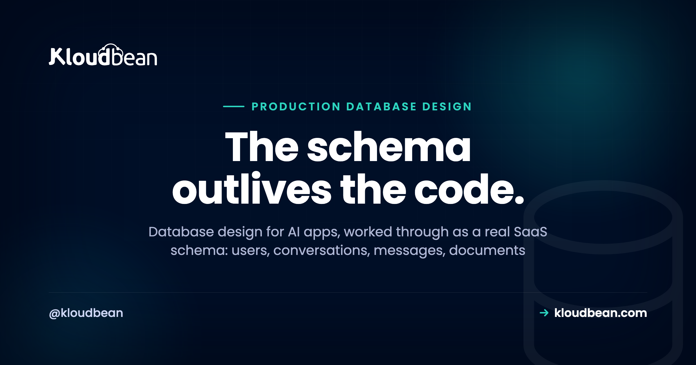

Production Database Design for AI Apps: The Schema a Real SaaS Needs

Good database design for AI apps is the part nobody prompts their way through. The model gets all the attention, but the thing that outlives your code, survives every redeploy, and decides whether you can bill a customer or honour a deletion request is the schema underneath. Get it roughly right early and the app grows calmly. Get it wrong and you're doing surgery on live data at the worst possible time.
This is a walk through the tables a real AI SaaS actually needs, in copy-paste SQL, with the reason each one exists. Not a normalization lecture. A working starting schema: who the user is, what they said, what documents they gave you, the embeddings for search, what they used (so you can bill and rate-limit), what you charged, who did what, and, the piece most schemas skip, how to erase all of it cleanly when someone asks.
A production AI app needs a handful of related tables: users, conversations, and messages for the chat spine; documents and doc_chunks (with a pgvector column) for knowledge and search; usage_events and billing_records for metering and money; and an audit_log for accountability. Design foreign keys with ON DELETE CASCADE and a soft-delete column from the start, so a delete-my-account request is one transaction, not manual surgery. Keep the durable record in Postgres and the fast, throwaway state in Redis.
What database design for AI apps really comes down to
Most of an AI SaaS schema is just a SaaS schema. Users, a subscription, some content. What makes database design for AI apps its own thing is three pressures that show up early and hurt if you ignore them.
First, conversational data grows fast and unevenly. One user sends three messages, another pastes a novel. You're storing every turn, sometimes with token counts, and that table gets big quickly. Second, you have embeddings: vectors you search by similarity, not by exact match, and they want to sit close to the relational data you filter on. Third, the model costs real money per call, so metering isn't a nice-to-have you bolt on before launch. It's a column you should be writing from request one.
The rest is ordinary discipline. Sensible keys, foreign keys that mean something, indexes on the columns you actually query, and a deletion story you designed on purpose. Let's build it.
The shape of the schema, in one picture
Before the SQL, here's how the tables relate. A user is the hub. Everything hangs off them, and almost every "who owns this row" question is answered by a user_id foreign key. Three branches matter: the conversation branch, the knowledge branch, and the money branch. An audit log sits to the side, recording actions across all of them.
Users, conversations, and messages: the conversational spine
Start with the three tables almost every AI app shares. A user has many conversations, and a conversation has many messages. Notice two deliberate choices in here: a deleted_at column on users for soft delete, and ON DELETE CASCADE so removing a parent row cleans up its children automatically.
CREATE TABLE users (
id uuid PRIMARY KEY DEFAULT gen_random_uuid(),
email text UNIQUE NOT NULL,
created_at timestamptz NOT NULL DEFAULT now(),
deleted_at timestamptz -- NULL = active, set = soft-deleted
);
CREATE TABLE conversations (
id uuid PRIMARY KEY DEFAULT gen_random_uuid(),
user_id uuid NOT NULL REFERENCES users(id) ON DELETE CASCADE,
title text,
created_at timestamptz NOT NULL DEFAULT now()
);
CREATE TABLE messages (
id bigint GENERATED ALWAYS AS IDENTITY PRIMARY KEY,
conversation_id uuid NOT NULL REFERENCES conversations(id) ON DELETE CASCADE,
role text NOT NULL, -- 'user' | 'assistant' | 'system'
content text NOT NULL,
token_count int, -- handy later for cost + context limits
created_at timestamptz NOT NULL DEFAULT now()
);A couple of choices worth defending. Messages use a bigint identity key, not a uuid, because they're the highest-volume table and a compact, sequential key keeps the index tight and inserts cheap. The role column mirrors the shape the model APIs already speak, so you're not translating on every write. And storing token_count per message costs you nothing now and saves you later, both for trimming context windows and for the usage math we're about to get to.
Use timestamptz, not timestamp. Your users are in other time zones, your server might not be where you think, and a naive timestamp is a bug waiting for a support ticket. Store an instant, format it for humans at the edge.
Documents and embeddings: why vectors can live in Postgres
If your app does retrieval, search, or any "answer from my documents" feature, you need somewhere for the source files and somewhere for their embeddings. The files themselves belong in object storage, not the database; the row just points at them. The embeddings, though, can sit right in Postgres next to everything else.
CREATE EXTENSION IF NOT EXISTS vector; -- pgvector, if your Postgres has it
CREATE TABLE documents (
id uuid PRIMARY KEY DEFAULT gen_random_uuid(),
user_id uuid NOT NULL REFERENCES users(id) ON DELETE CASCADE,
title text,
source_uri text, -- path to the file in object storage
created_at timestamptz NOT NULL DEFAULT now()
);
CREATE TABLE doc_chunks (
id bigint GENERATED ALWAYS AS IDENTITY PRIMARY KEY,
document_id uuid NOT NULL REFERENCES documents(id) ON DELETE CASCADE,
user_id uuid NOT NULL REFERENCES users(id) ON DELETE CASCADE,
chunk_text text NOT NULL,
embedding vector(1536), -- one vector per chunk
created_at timestamptz NOT NULL DEFAULT now()
);The vector(1536) type comes from the pgvector extension (1536 is just a common embedding size; use whatever your model outputs). The reason this matters for design is simple: your embeddings can join and filter against your relational data in a single query. No second database to keep in sync, no copying user IDs into a separate vector store and praying they stay consistent, one backup that captures everything.
See the user_id on doc_chunks, even though you could reach it through document_id? That's a deliberate denormalization. Your retrieval query filters by user on every single call, and you want that filter to be one indexed column on the table you're actually searching, not a join away. It makes the security-critical query both simpler and faster:
SELECT chunk_text
FROM doc_chunks
WHERE user_id = $1 -- the permission filter, always first
ORDER BY embedding <=> $2 -- then similarity (pgvector distance operator)
LIMIT 5;The WHERE user_id = $1 is doing the security work: a user can only ever retrieve their own chunks. Everything about tuning that vector index, and whether Postgres is the right home for your vector volume at all, lives in the pgvector guide. For most apps, the answer is yes, keep it in Postgres and keep your stack small.
Usage and tokens: build the meter on day one
Here's the one opinion I'll push hardest in this whole piece: model the usage table before you write a single billing feature. Not after you have customers. Not when you decide to charge. Now, on day one, when it's a single empty table nobody's using yet.
The reason is brutal and simple. You cannot bill for, rate-limit, or analyse usage you never recorded. If you launch without a usage table and add billing three months later, you've got three months of history that doesn't exist. You can't reconstruct who spent what, you can't honour a "you charged me wrong" dispute, and you can't set a fair free-tier cap because you have no idea what normal looks like. Retrofitting metering is the migration everyone dreads, and it's entirely avoidable.
CREATE TABLE usage_events (
id bigint GENERATED ALWAYS AS IDENTITY PRIMARY KEY,
user_id uuid NOT NULL REFERENCES users(id), -- note: no CASCADE here, on purpose
kind text NOT NULL, -- 'chat' | 'embed' | 'completion'
model text, -- which model served it
prompt_tokens int NOT NULL DEFAULT 0,
output_tokens int NOT NULL DEFAULT 0,
created_at timestamptz NOT NULL DEFAULT now()
);
CREATE TABLE billing_records (
id uuid PRIMARY KEY DEFAULT gen_random_uuid(),
user_id uuid REFERENCES users(id), -- nullable so it survives anonymisation
period_start date NOT NULL,
period_end date NOT NULL,
amount_cents bigint NOT NULL,
created_at timestamptz NOT NULL DEFAULT now()
);Write one usage_events row per model call, with the token split and the model name. That raw log is the truth. Your billing job reads a period, sums the tokens per user, applies your pricing, and writes a billing_records row: a summary you can show on an invoice without re-summing millions of events every time someone opens the billing page.
Notice usage_events deliberately does not cascade on user delete, and billing_records.user_id is nullable. That's not sloppiness. Financial records usually need to outlive the account for accounting and tax reasons, so when a user leaves you anonymise these rows rather than deleting them. Which brings us to the part most schemas get wrong.
Audit records: a durable log of who did what
An audit log is a plain table that answers "who did that, and when." You don't need it on day one the way you need usage, but you'll want it the first time something looks wrong and you're staring at data with no idea how it got that way.
CREATE TABLE audit_log (
id bigint GENERATED ALWAYS AS IDENTITY PRIMARY KEY,
actor_id uuid, -- who acted (NULL for system actions)
action text NOT NULL, -- 'user.login', 'document.delete', 'plan.upgrade'
target text, -- what it touched, e.g. 'document:42'
metadata jsonb, -- extra context, structured
created_at timestamptz NOT NULL DEFAULT now()
);Two rules keep an audit log honest. It's append-only: your app inserts, it never updates or deletes a row. And it records the actor even for things users can't see, like a background job or an admin action, so the trail is complete. The jsonb metadata column is the pressure valve: you can attach whatever context an event needs without a schema change every time you log something new.
This is your application's audit table, and it's separate from any platform-level activity log your host might offer. Don't confuse the two. The app-level log knows about your domain events; keep it in your schema where you can query it alongside everything else.
Deletion is a feature, not an afterthought
Now the section most tutorials skip, and the one that turns into a fire drill. Picture the anti-pattern: an app with no deleted_at columns and no foreign-key cascades. A user emails "please delete my account and all my data." Suddenly you're writing one-off DELETE statements by hand, table by table, in production, trying to remember every place a user_id got scattered. Miss one and you've kept data you swore you erased. That's not a workflow. That's surgery, and you're operating without a map.
Design gives you the map. There are two kinds of delete, and a real app uses both deliberately.
| Aspect | Soft delete (deleted_at) | Hard delete (row is gone) |
|---|---|---|
| What happens | Row stays, flagged with a timestamp | Row is physically removed |
| Reversible | Yes, just clear the flag | No, only a restore from backup |
| Query cost | Every read must filter out deleted rows | Nothing to filter, table stays lean |
| Right for | Undo, trash bins, accidental deletes, short grace periods | Genuine erase-my-data requests, legal removal |
| The trap | Forget the filter once and deleted data reappears | Cascade set up wrong and you orphan rows or over-delete |
Soft delete is your everyday default. A user "deletes" a conversation, you set deleted_at = now(), your queries carry a WHERE deleted_at IS NULL, and you can offer an undo. Good for accidents, good for support ("I didn't mean to delete that").
Hard delete is for when someone genuinely wants to be forgotten, which in a lot of places is a legal right, not a favour. This is where the design work from earlier pays off. Because you set up ON DELETE CASCADE on the child tables, erasing a user is close to one statement, and the anonymise-don't-delete rule handles the financial records that must stay:
-- Erase a user for real. Cascades clear the children; billing is anonymised.
BEGIN;
-- keep financial history, but detach it from the person
UPDATE billing_records SET user_id = NULL WHERE user_id = $1;
UPDATE usage_events SET user_id = NULL WHERE user_id = $1;
UPDATE audit_log SET actor_id = NULL WHERE actor_id = $1;
-- this one line cascades: conversations, messages, documents, doc_chunks
DELETE FROM users WHERE id = $1;
COMMIT;One transaction. It either all happens or none of it does. Compare that to hunting through a dozen tables by hand, and you can see why the cascades and the nullable billing key were worth setting up on day one. The erase path is a feature you build once and test, not a panic you improvise later. And do test it: a throwaway user, a real erase, then a check that nothing of theirs is left where it shouldn't be.
Index the columns you actually query
Indexes are where good intentions go sideways. The reflex is to index everything, which slows every write and bloats the database for lookups you never run. The better rule: index the columns you filter on, join on, and sort by. In this schema, that's a short, predictable list.
-- Foreign keys you filter and join on constantly
CREATE INDEX ON conversations (user_id);
CREATE INDEX ON messages (conversation_id, created_at); -- list a chat in order
CREATE INDEX ON doc_chunks (user_id); -- the permission filter
CREATE INDEX ON usage_events (user_id, created_at); -- sum a billing period
-- The vector index for similarity search (pgvector). Tune for your setup.
CREATE INDEX ON doc_chunks USING hnsw (embedding vector_cosine_ops);A few of these are doing specific work. The composite (conversation_id, created_at) index means loading a conversation in order is a single efficient range scan, not a sort of the whole table. The (user_id, created_at) on usage is what makes a billing job for last month fast instead of a full scan. And the HNSW index is what turns vector search from a slow linear comparison into something usable, though the how and the trade-offs belong in the pgvector guide.
Don't add these blind, either. Index because a real query is slow or clearly will be, watch the ones that matter, and drop any that stop earning their keep. An index nobody's query uses is pure overhead.
Postgres for the durable record, Redis for the fast layer
One more design decision separates apps that scale calmly from ones that fall over: knowing what belongs in your database and what belongs in a fast, throwaway layer beside it. Postgres is your system of record. Redis is for the hot, ephemeral stuff you'd happily lose.
| Data | Postgres (system of record) | Redis (fast, ephemeral) |
|---|---|---|
| Users, conversations, messages | Yes, the source of truth | No |
| Documents and embeddings | Yes (pgvector) | No |
| Usage events and billing | Yes, must be durable | No |
| Session tokens | Optional | Yes, with a TTL |
| Rate-limit counters | No, too write-heavy | Yes, this is its sweet spot |
| Response or prompt cache | No | Yes, with a TTL |
| If it gets wiped | You've lost customer data | You recompute or re-login, nothing lost |
The rule fits on a sticky note. If losing it is a disaster, it's Postgres. If losing it is a minor inconvenience, it can be Redis. Rate-limit counters are the clearest case: they change on every request, they don't matter tomorrow, and hammering your primary database with those writes is a waste. That's exactly what Redis is good at. Just don't let Redis quietly become your database, because it isn't one, and a restart will teach you that the hard way.
Worth flagging: whichever database you use, an app under load talks to it through a connection pool, not a fresh connection per request. That's its own topic, covered in database connection pooling.
Where Kloudbean fits
The schema is yours to design; the honest truth is that any competent Postgres will run it. Where a managed platform earns its place is in not making you babysit that Postgres. This is the plumbing under the design work above.
On Kloudbean you launch a managed PostgreSQL (or MySQL, or MariaDB) in a few clicks, and it runs beside your app instead of in a separate console with a separate bill. Because it's Postgres, your embeddings can live right next to your relational tables using the pgvector extension, though whether you can enable it depends on your Postgres version and setup, so check availability rather than assuming it's pre-loaded. Add a managed database to your app and a pgvector workflow, back it with managed Redis for the fast layer, and you've got the whole shape from this article in one dashboard. Backups run automatically, SSL is free, you deploy from Git on every push, and you lock the database down by whitelisting your app server's IP so only it can connect. No public database sitting open, no extra networking product to configure.
The honest boundary, because it's the part that builds trust: managed means the platform runs the server, the engine, SSL, backups, and patching. Your schema, your data, and your deletion logic stay yours. Kloudbean can keep Postgres healthy, reachable, and backed up. It can't design your tables or write your erase path, and it doesn't make your app compliant with anyone's data law. That work is the subject of this article, and it belongs to you. For the wider view of what changes when an AI app meets real users, see the last mile of vibe coding.
Give your schema a home that runs itself.
Design the tables; let the platform run them. Launch managed PostgreSQL or MySQL and managed Redis in one dashboard, keep embeddings beside your relational data, and deploy straight from Git with automatic backups and free SSL.
Start free at kloudbean.com; see plans on pricing.
Managed PostgreSQL · Managed Redis · Automatic backups · IP allow-listing · Free SSL · Git deploy · Free migration
FAQ
What is database design for AI apps?
It's deciding the tables, relationships, and constraints that store an AI application's data: users, conversations and messages, documents and their embeddings, usage and billing, and audit records. It's mostly ordinary SaaS schema design plus three AI-specific pressures: fast-growing conversational data, vector embeddings you search by similarity, and per-call model costs that make usage metering load-bearing from day one.
What tables does an AI SaaS need?
A sensible starting set is users, conversations, messages, documents, doc_chunks (for embeddings), usage_events, billing_records, and audit_log. The user table is the hub and almost everything carries a user_id foreign key. You'll add more as features arrive, but that core covers identity, chat, knowledge, money, and accountability.
Can I store embeddings in the same Postgres database as my app data?
Yes, and for most apps you should. With the pgvector extension, a vector column lives in a normal table, so you can filter by user and sort by similarity in one query and back everything up as a single system. A separate vector database only starts to make sense at very high vector volumes. Enabling pgvector depends on your Postgres version and setup, so confirm availability.
Should I use soft delete or hard delete?
Use both, on purpose. Soft delete (a deleted_at timestamp you filter out) is the everyday default because it gives you undo and a grace period. Hard delete is for genuine erase-my-data requests and legal removal, where the row must actually be gone. Financial records are the exception: anonymise them by nulling the user reference rather than deleting, so accounting history survives.
How do I let a user delete all their data?
Design foreign keys with ON DELETE CASCADE from the start, so deleting the user row automatically clears conversations, messages, documents, and chunks. Wrap it in one transaction, and first null out the user reference on any records you must keep for accounting, like billing and usage. Done right it's a single tested operation, not manual surgery across a dozen tables.
Why should I build the usage and token table on day one?
Because you cannot bill for, rate-limit, or analyse usage you never recorded. If you add billing months after launch, the earlier history simply doesn't exist, so you can't settle disputes or set a fair free tier. Writing one usage row per model call from the first request is cheap, and it turns billing later into a query instead of a painful reconstruction.
Which columns should I index in an AI app database?
Index the columns you filter on, join on, and sort by, not everything. In this schema that means the user_id and conversation_id foreign keys, the created_at columns you sort or range over, and the vector column for similarity search. Composite indexes like (conversation_id, created_at) make common reads a single efficient scan. Skip indexes no query uses, since they only slow writes.
What belongs in Redis instead of Postgres?
Fast, throwaway state: session tokens with a TTL, rate-limit counters, and caches for repeated responses or prompts. The test is simple: if losing the data on a restart is a disaster, it belongs in Postgres; if it's a minor inconvenience you can recompute, Redis is a good home. Just don't treat Redis as your system of record, because it isn't one.
Do I need a separate vector database for an AI app?
Usually not. Postgres with pgvector keeps your embeddings beside your relational data, which keeps the stack small and the backups unified, and it's plenty for most applications. A dedicated vector engine earns its cost at very large scale or extreme query volumes. Start in Postgres, and move only when real numbers tell you to.